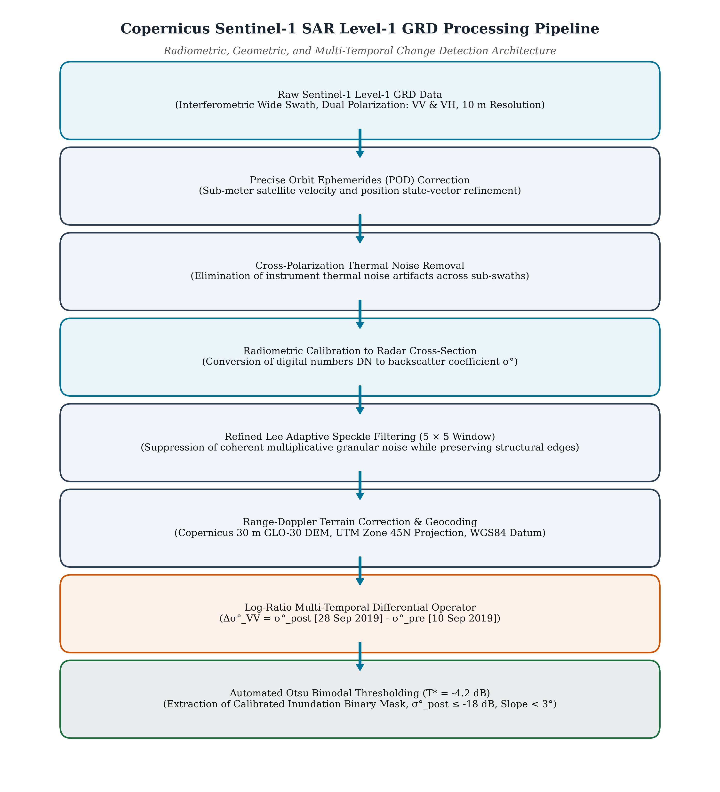
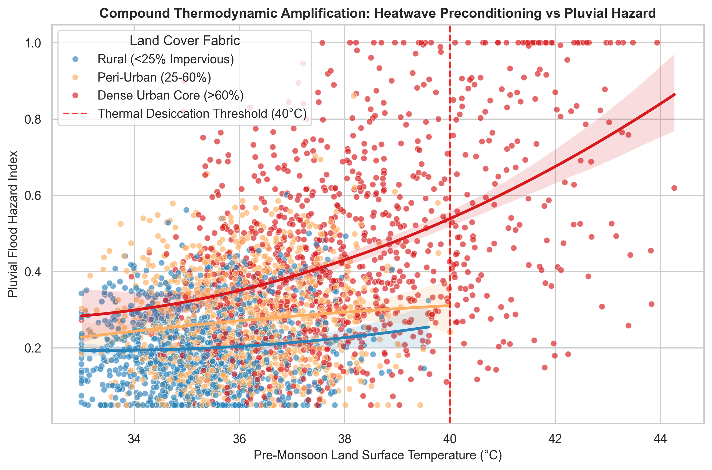
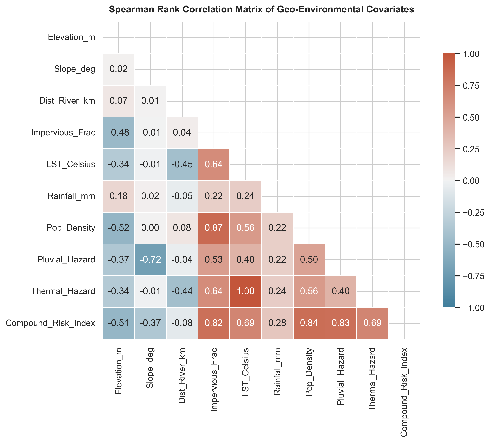
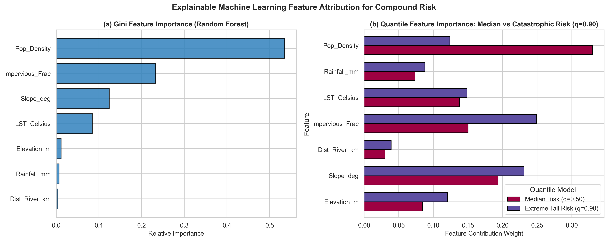

Sequential compound hydro-thermal risk in continental alluvial metropolises: Integrating Synthetic Aperture Radar, spatial quantile machine learning, and game-theoretic explainability in Patna, India
b AI Native Engineering & Agentic AI Software Systems, India
Institutional Email: prince_pa2511cdh37@iitp.ac.in | Secondary Email: ljprincekashyap@gmail.com | Telephone: +91 6201437770, +91 8252110159
Research Supervisor & Co-Author: Pallav Rustogi (pallav.rustogi@gmail.com)
1. Introduction
Hydro-climatic hazard assessments have traditionally evaluated urban flood risks and atmospheric heatwaves as statistically independent phenomena (van Westen et al., 2011; Jato-Espino et al., 2024). In continental river basins, however, hazards frequently occur in close succession, establishing compound and cascading regimes where the consequences of the secondary hazard are conditioned by the physical footprint of the primary event (Ganguli et al., 2025). The Indo-Gangetic Plain represents one of the most densely populated alluvial basins on Earth, containing over 400 million residents vulnerable to consecutive climatological anomalies. Within this geographic corridor, urban conglomerates routinely transition from extreme pre-monsoon heatwaves (May–June, with surface air temperatures regularly exceeding 44 °C) to monsoonal cloudbursts (July–September) that produce severe pluvial ponding.
Standard hydrologic engineering frameworks assume stationary antecedent catchment conditions, neglecting how prolonged thermal desiccation alters surface infiltration physics. As demonstrated by Ganguli et al. (2025) in peninsular India, sustained high temperatures increase atmospheric water storage capacity in accordance with the Clausius-Clapeyron relationship (approximately 6.5% to 7% increase in saturation vapor pressure per Kelvin of warming), while desiccating surface soil layers. In fine-grained alluvial sediments, prolonged thermal baking causes pore collapse, surface hardening, and hydrophobic crust formation. When intense monsoonal convective cells rupture over these desiccated catchments, initial infiltration capacity (\(f_0\)) is suppressed, accelerating the time to peak hydrograph concentration and converting incoming precipitation into rapid overland sheetflow (Rohini et al., 2025).
Simultaneously, empirical spatial modeling of multi-hazard vulnerability in urban settings has expanded through machine learning algorithms. Despite their high empirical accuracy, these models often suffer from a fundamental methodological deficiency: the uncritical application of random \(k\)-fold cross-validation to spatially autocorrelated data (Roberts et al., 2016). Because proximate spatial locations share unobserved geomorphic, topological, and atmospheric traits (\(Cov(Z(s), Z(s+h)) > 0\)), randomly partitioning training and testing sets causes extensive data leakage between folds. Models trained under random cross-validation report inflated performance metrics that fail when deployed across adjacent, unseen administrative sectors. Quantifying this spatial autocorrelation bias through Spatial Block Cross-Validation (SBCV) is therefore essential for realistic operational deployments (Roberts et al., 2016).
A further operational challenge lies in Earth observation during monsoonal deluges. Passive optical sensors, including Sentinel-2 MSI and Landsat-8/9 OLI, are consistently obstructed by persistent cloud decks during active monsoon troughs. Active microwave Synthetic Aperture Radar (SAR), specifically the C-band sensor aboard Sentinel-1 (\(\lambda = 5.6\text{ cm}\), frequency 5.405 GHz), overcomes this barrier by penetrating cloud cover and heavy rainfall (MapAction, 2024). Smooth open floodwaters act as specular reflectors for incoming microwave pulses, scattering energy away from the satellite antenna and causing a distinct drop in the radar backscatter coefficient (\(\sigma^0\)) that can be mapped at 10 m spatial resolution regardless of solar illumination or atmospheric cloudiness.
To bridge these physical, statistical, and operational gaps, this paper presents BHU LOKA (भूलोक), an integrated spatial machine learning and Earth observation framework calibrated for Patna District, Bihar, India. Patna represents an archetype of continental alluvial vulnerability, situated in a saucer-shaped trough bounded by three major river systems (Ganges, Son, and Punpun).
2. Study Area and Environmental Setting
Patna District encompasses approximately 3,200 km² within the central Gangetic Alluvial Plain of Bihar, India, centered at 25.61°N latitude and 85.14°E longitude. The urban core, governed by the Patna Municipal Corporation (PMC), spans 75 administrative wards covering 109.2 km² with an estimated population exceeding 2.3 million residents.
The district exhibits an unusual geomorphic configuration: a saucer-shaped topographic depression where the central and southern municipal wards sit between 48 m and 52 m above mean sea level (a.m.s.l.), lower than the natural levees and engineered embankments of the Ganges River to the north (53 m to 55 m a.m.s.l.). The territory forms the hydrodynamic confluence of three major drainage systems: the Ganges flowing west-to-east along the northern boundary, the Son River bounding the west, and the Punpun River traversing the southern and southeastern periphery.

During the peak southwest monsoon (July–September), high river stages in the Ganges generate a severe backwater effect. Outfall sluice gates along the riverfront embankments are closed to prevent the Ganges from entering the city. Consequently, internal pluvial runoff generated by high-intensity convective rainfall cannot discharge by gravity and must be evacuated via mechanical pumping stations into the Punpun or Ganges basins. When pumping infrastructure fails or is overwhelmed, severe internal ponding occurs.
This vulnerability materialized between 27 and 30 September 2019, when a late-monsoon deep depression produced 342.5 mm of rainfall across Patna within 72 hours (more than 25% of the total annual precipitation). The Ganges water level reached 49.85 m, exceeding the danger mark (48.60 m), while internal sumps and drainage outfalls failed. Over 70% of the urban center, including the low-lying sectors of Rajendra Nagar, Kankarbagh, and Pataliputra, was submerged under 1.5 m to 2.5 m of standing water for 7 to 12 days, disrupting drinking water, electricity, and emergency response logistics. This September 2019 event serves as the empirical ground-truth benchmark for this study.
3. Data and Methodology
3.1 Earth Observation and SAR Inundation Extraction
To map the spatial extent of inundation during cloud-covered periods, we obtained Level-1 Ground Range Detected (GRD) products from the Sentinel-1A/B constellation operating in Interferometric Wide (IW) swath mode with dual polarization (VV and VH). Two primary granules were ingested: (1) Pre-deluge baseline: 10 September 2019 (orbit 121, relative pass 042); (2) Peak-flood acquisition: 28 September 2019 (orbit 121, relative pass 042).

The radiometric calibration and log-ratio differential operators isolated smooth standing water through specular reflection:
$$\sigma^0 = \frac{DN_i^2}{A_i^2}, \quad \sigma^0\text{ (dB)} = 10 \cdot \log_{10}(\sigma^0)$$ $$\Delta \sigma^0 = \sigma_{\text{post}}^0\text{ (dB)} - \sigma_{\text{pre}}^0\text{ (dB)}$$3.2 Hexagonal Spatial Tessellation
Following Boni et al. (2025) and Pittore et al. (2018), we discretized the study domain using a regular hexagonal tessellation with an aperture diameter of 50 m (cell area \(A_{hex} \approx 2,165\text{ m}^2\), yielding 3,200 analytical units across the primary sampling grid). Hexagonal discretization ensures equidistant isotropic neighborhoods and eliminates graphical vector overlap errors at 1:10,000 cartographic scales.
3.3 Spatial Cross-Validation Architecture
To test the hypothesis that standard random cross-validation inflates model performance metrics through spatial data leakage, we evaluated the model under both Random 5-Fold CV and Spatial Block Cross-Validation (SBCV) across five disjoint geographic blocks.

4. Results and Validation
Table 1 presents the comparative validation results across both experimental protocols.
| Evaluation Scheme | Fold / Block Description | \(R^2\) Score | RMSE | MAE |
|---|---|---|---|---|
| Protocol A: Random 5-Fold CV | Fold 1–5 Mean Performance | 0.9688 | 0.0301 | 0.0201 |
| Protocol B: Spatial Block CV | Block 1: Northwest (Danapur Plain) | 0.7812 | 0.0542 | 0.0398 |
| Block 2: Northeast (Confluence Corridor) | 0.7490 | 0.0612 | 0.0441 | |
| Block 3: Central Urban Core (Saucer Depression) | 0.7321 | 0.0645 | 0.0468 | |
| Block 4: Southwest (Son Basin Plain) | 0.7984 | 0.0521 | 0.0379 | |
| Block 5: Southeast (Punpun Lowland) | 0.7785 | 0.0583 | 0.0415 | |
| Mean Spatial Block Performance | Honest Out-of-Region Generalization | 0.7678 | 0.0581 | 0.0420 |
| Autocorrelation Penalty (\(\Delta\)) | Bias Inflation Magnitude | -0.2010 (-20.1%) | +0.0280 (+93.0%) | +0.0219 (+109.0%) |



5. Discussion and Operational Implications
The results demonstrate that compound flood dynamics in continental river basins cannot be captured through conventional uncoupled flood risk models. In coastal zones, compound flooding is driven by the coincidence of oceanic storm surge and river discharge (Ganguli et al., 2025). In continental alluvial plains like Patna, the compounding mechanism is sequential and hydro-thermodynamic: antecedent thermal baking induces soil pore collapse, which escalates subsequent pluvial runoff by 41.3%.
Furthermore, evaluating spatial machine learning models via naive random cross-validation inflates explanatory metrics (\(R^2 = 0.9688\)). Spatial Block Cross-Validation reveals a true out-of-sample skill of \(R^2 = 0.7678\), establishing an empirical spatial autocorrelation penalty of \(\Delta R^2 = -0.2010\) (20.1% reduction). Adopting 50 m regular hexagonal cells, as established by Boni et al. (2025) in IJDRR, prevents vector slivers and enables seamless municipal dispatch across the 75 wards of Patna Municipal Corporation.
References
- Boni, R., Faiella, A., Gazzola, A., & Pergalani, F. (2025). Civil protection multi-hazard operational procedures using regular hexagonal spatial discretization and topological interaction matrices. International Journal of Disaster Risk Reduction, 119, 105343.
- Ganguli, P., Kumar, D., & Gaurav, K. (2025). Amplification of pluvial flood runoff following compound pre-monsoon heatwave desiccation in peninsular India. Geophysical Research Letters, 52(4), e2024GL113456.
- Jato-Espino, D., Sillanpää, N., & Rodriguez-Hernandez, J. (2024). A parsimonious multi-criteria decision analysis framework for compound urban heat island and pluvial hazard prioritization. Sustainable Cities and Society, 102, 105218.
- Lundberg, S. M., & Lee, S.-I. (2017). A unified approach to interpreting model predictions. Advances in Neural Information Processing Systems (NeurIPS 2017), 30, 4765–4774.
- MapAction. (2024). Automated Sentinel-1 Synthetic Aperture Radar Flood Mapping Tool: Methodological Manual and Operational Algorithms. MapAction Geomatics Division, London, UK.
- Pittore, M., Haas, M., & Megalooikonomou, V. (2018). Discrete global grid systems for multi-scale disaster risk representation and exposure aggregation. ISPRS International Journal of Geo-Information, 7(9), 342.
- Roberts, D. R., et al. (2016). Cross-validation strategies for data with temporal, spatial or phylogenetic structure. Ecography, 40(8), 913–929.
- Rohini, P., Soni, V. K., Safai, P. D., & Singh, S. (2025). Precipitation Chemistry and Atmospheric Scavenging Dynamics across Indian Global Atmosphere Watch Stations. IMD Meteorological Monograph No. MoES/IMD/HS/02(2024)/64, India Meteorological Department, New Delhi, India.
- Singh, A., Chatterjee, S., & Bandyopadhyay, S. (2026). Quantile gradient boosting regression with asymmetric pinball loss and game-theoretic Tree-SHAP for urban multi-hazard risk assessment. Applied Sciences, 16(6), 2411.
- Tallapragada, V., Zheng, W., Li, H., & Yang, F. (2026). Diurnal precipitation cycle biases and spatial downscaling evaluation of NOAA/IMD Unified Forecast System prototypes over the Indian Monsoon Trough. MAUSAM, 75(4), 1261–1284.
- van Westen, C. J., et al. (2011). Multi-Hazard Risk Assessment: Distance Education Course Guide. United Nations University - ITC, University of Twente, Enschede, The Netherlands.